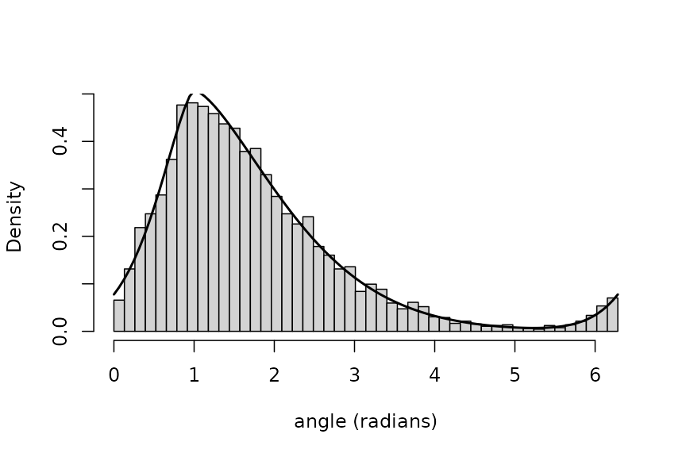
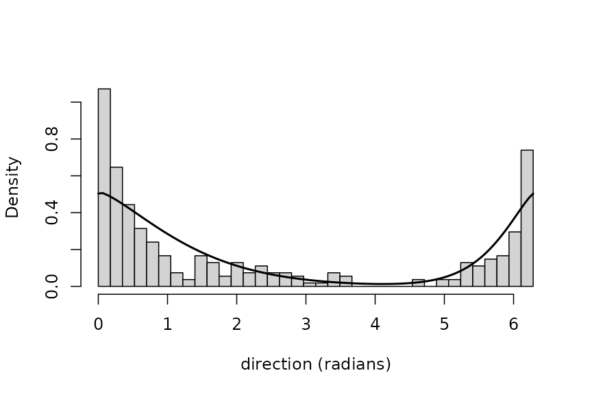

wsgnstat: the wrapped skew generalised normal distribution
Source:vignettes/wsgnstat.Rmd
wsgnstat.RmdThe law and its parameters
On the line, the skew generalised normal distribution has the two-piece exponential-power density
with
to the right of the location
and
to its left. It is the scale mixture of a uniform variable and a
generalised gamma variable, which is how rsgn() draws from
it. The shape
governs the tails
(
is Gaussian,
Laplace-like, smaller values heavier), and the pair
the asymmetry: the mass to the left of
is
.
Wrapping onto the circle sums the line density over all turns,
.
On the circle the package uses the identified parameterisation
,
and
,
so the circular law has three parameters: the location mu,
the tail parameter beta and the skewness lam,
with lam = 0.5 symmetric. For a skew law mu is
the junction of the two pieces, not the mean direction.
th <- seq(0, 2 * pi, length.out = 721)
op <- par(mfrow = c(1, 3), mar = c(4, 4, 2, 1))
for (b in c(0.8, 1.5, 3)) {
plot(th, dwsgn(th, mu = pi, beta = b, lam = 0.5), type = "l", ylim = c(0, 1.2),
xlab = "angle (radians)", ylab = "density", main = paste("beta =", b))
lines(th, dwsgn(th, mu = pi, beta = b, lam = 0.25), lty = 2)
}Wrapped densities for three tail parameters, symmetric (solid) and skew (dashed).
par(op)Density, distribution function, quantiles and random generation
The four functions follow R’s usual naming. The distribution function is measured anticlockwise from angle zero and is computed exactly, as a sum over turns of incomplete gamma functions, so it needs no numerical quadrature; the quantile function inverts it.
mu <- 1
beta <- 1.5
lam <- 0.3
dwsgn(c(0.5, 1, 2), mu, beta, lam)
#> [1] 0.2607334 0.5077476 0.2989011
pwsgn(c(0.5, 1, 2), mu, beta, lam)
#> [1] 0.07806267 0.27633042 0.69219129
qwsgn(c(0.1, 0.5, 0.9), mu, beta, lam)
#> [1] 0.5779239 1.4711739 3.1037257The distribution function agrees with direct numerical integration of the density, and the density integrates to one over the circle:
c(pwsgn = pwsgn(2, mu, beta, lam),
integrate = integrate(dwsgn, 0, 2, mu = mu, beta = beta, lam = lam)$value,
total = integrate(dwsgn, 0, 2 * pi, mu = mu, beta = beta, lam = lam)$value)
#> pwsgn integrate total
#> 0.6921913 0.6921913 0.9999999Draws in the identified parameterisation come from
rwsgn(); rsgn() draws on the line, and wraps
if asked, for any
.
set.seed(1)
x <- rwsgn(5000, mu, beta, lam)
hist(x, breaks = seq(0, 2 * pi, length.out = 49), freq = FALSE, main = "",
xlab = "angle (radians)")
curve(dwsgn(x, mu, beta, lam), 0, 2 * pi, add = TRUE, lwd = 2)
A sample of 5000 draws with the wrapped density overlaid.
A Kolmogorov-Smirnov distance between the sample and the exact distribution function confirms the agreement:
Reductions to known circular laws
At
the line law is the two-piece (split) normal, so the circular law is the
wrapped split normal; with lam = 0.5 as well,
and the rate is one on both sides, so the line law is
and the circular law is the wrapped normal with
.
Both reductions can be checked against densities built directly from
dnorm():
tt <- c(0.5, 2, 4.5)
k <- -60:60
wrapped_normal <- vapply(tt, function(t) sum(dnorm(t + 2 * pi * k, 0, sqrt(1 / 2))), 0)
rbind(wsgnstat = dwsgn(tt, mu = 0, beta = 2, lam = 0.5), wrapped_normal = wrapped_normal)
#> [,1] [,2] [,3]
#> wsgnstat 0.4393913 0.0103335 0.02346806
#> wrapped_normal 0.4393913 0.0103335 0.02346806
## wrapped split normal: standard deviation sigma / (sqrt(2) lam) on the right of mu and
## sigma / (sqrt(2) (1 - lam)) on the left, with left mass lam
l <- 0.3
s <- sqrt(l * (1 - l))
split_normal <- function(x) {
sr <- s / (sqrt(2) * l)
sl <- s / (sqrt(2) * (1 - l))
ifelse(x >= 0, 2 * (1 - l) * dnorm(x, 0, sr), 2 * l * dnorm(x, 0, sl))
}
wrapped_split <- vapply(tt, function(t) sum(split_normal(t + 2 * pi * k)), 0)
rbind(wsgnstat = dwsgn(tt, mu = 0, beta = 2, lam = l), wrapped_split_normal = wrapped_split)
#> [,1] [,2] [,3]
#> wsgnstat 0.4645507 0.09312363 0.0003979992
#> wrapped_split_normal 0.4645507 0.09312363 0.0003979992The trigonometric moments of the wrapped normal are , and the engine reproduces them through its characteristic function:
tm <- trig_moments(4, mu = 0, beta = 2, lam = 0.5)
rbind(engine = tm$A, closed_form = exp(-(1:4)^2 / 4))
#> [,1] [,2] [,3] [,4]
#> engine 0.7788008 0.3678794 0.1053992 0.01831564
#> closed_form 0.7788008 0.3678794 0.1053992 0.01831564In the identified parameterisation the concentration of the symmetric members is tied to the tail parameter, so the wrapped normal reached at is the one with ; the skew members at are wrapped split normals of the matching scale.
The wrapped skew-normal of Pewsey (2000) skews the normal
differently, through the factor
of Azzalini’s construction rather than through two pieces. The two
families share the wrapped normal, at
there and at
,
lam = 0.5 here:
dwsn <- function(theta, xi, omega, alpha, k = -60:60) {
vapply(theta, function(t) {
z <- (t + 2 * pi * k - xi) / omega
sum(2 / omega * dnorm(z) * pnorm(alpha * z))
}, 0)
}
rbind(wrapped_skew_normal_alpha0 = dwsn(tt, 0, sqrt(1 / 2), 0),
wsgnstat = dwsgn(tt, mu = 0, beta = 2, lam = 0.5))
#> [,1] [,2] [,3]
#> wrapped_skew_normal_alpha0 0.4393913 0.0103335 0.02346806
#> wsgnstat 0.4393913 0.0103335 0.02346806Away from the wrapped normal the two skewing mechanisms give different shapes (two half-normals joined at the mode, against a normal density reweighted by a normal distribution function), so neither family contains the other’s skew members.
Estimation from simulated data
Two estimators are provided. fit_wsgn_trig() matches the
first two sample trigonometric moments to their population values
(minimum distance, with sandwich standard errors); the population
moments come from the characteristic function, which is evaluated
through absolutely convergent integrals and is therefore available for
every
,
including
,
where the Fox-Wright series representation does not converge everywhere.
fit_wsgn_mle() maximises the wrapped likelihood, starting
from the moment estimate; its standard errors, when asked for, come from
a parametric bootstrap, because the observed information is unstable
near the cusp the density develops as
approaches one.
truth <- c(mu = 4, beta = 0.8, lam = 0.6)
set.seed(17)
y <- rwsgn(2000, truth["mu"], truth["beta"], truth["lam"])
ft <- fit_wsgn_trig(y)
fm <- fit_wsgn_mle(y)
round(rbind(truth = truth, moments = ft$par, moments_se = ft$se, likelihood = fm$par), 3)
#> mu beta lam
#> truth 4.000 0.800 0.600
#> moments 4.202 0.809 0.723
#> moments_se 0.092 0.030 0.050
#> likelihood 4.048 0.780 0.646The moment estimates lie within 2.5 of their own standard errors of the truth in every coordinate, and the likelihood estimates within 0.048 of it in every coordinate, at a heavy-tailed shape () where the characteristic function is reached only through the integral route. Bootstrap standard errors for the likelihood fit refit the model once per replicate; a small run at a lighter-tailed member:
truth2 <- c(mu = 1, beta = 1.5, lam = 0.3)
set.seed(18)
y2 <- rwsgn(500, truth2["mu"], truth2["beta"], truth2["lam"])
fb <- fit_wsgn_mle(y2, B = 30)
round(rbind(truth = truth2, estimate = fb$par, bootstrap_se = fb$se), 3)
#> mu beta lam
#> truth 1.000 1.500 0.300
#> estimate 0.957 1.459 0.289
#> bootstrap_se 0.063 0.075 0.028An application: wind directions at Col de la Roa
The wind data in the ‘circular’ package hold 310 wind
directions, in radians, recorded at a meteorological station in the
Italian Alps between January and March 2001 (Agostinelli 2007). This
section runs only when ‘circular’ is installed.
w <- as.numeric(wind_env$wind) %% (2 * pi)
fw_t <- fit_wsgn_trig(w)
fw <- fit_wsgn_mle(w)
round(rbind(moments = fw_t$par, moments_se = fw_t$se, likelihood = fw$par), 3)
#> mu beta lam
#> moments -0.108 2.026 0.340
#> moments_se 0.167 0.458 0.076
#> likelihood 0.026 1.355 0.322For comparison, the wrapped normal and wrapped Cauchy laws are fitted by maximum likelihood with the ‘circular’ package, and the three fits are set side by side by log-likelihood and AIC.
wc <- circular::circular(w, type = "angles", units = "radians", template = "none",
modulo = "asis", zero = 0, rotation = "counter")
f_wn <- circular::mle.wrappednormal(wc)
f_wc <- circular::mle.wrappedcauchy(wc)
ll <- c(wsgn = fw$logLik,
wrapped_normal = sum(log(circular::dwrappednormal(wc, f_wn$mu, f_wn$rho))),
wrapped_cauchy = sum(log(circular::dwrappedcauchy(wc, f_wc$mu, f_wc$rho))))
npar <- c(3, 2, 2)
round(cbind(logLik = ll, parameters = npar, AIC = -2 * ll + 2 * npar), 1)
#> logLik parameters AIC
#> wsgn -394.7 3 795.4
#> wrapped_normal -435.7 2 875.5
#> wrapped_cauchy -381.8 2 767.6
hist(w, breaks = seq(0, 2 * pi, length.out = 37), freq = FALSE, main = "",
xlab = "direction (radians)")
curve(dwsgn(x, fw$par["mu"], fw$par["beta"], fw$par["lam"]), 0, 2 * pi, add = TRUE, lwd = 2)
Wind directions with the fitted wrapped skew generalised normal density.
A goodness-of-fit look uses the probability integral transform: under
a correct model, pwsgn() at the fitted parameters carries
the data to uniform values on
.
Kuiper’s statistic suits the circle because it does not depend on where
the origin is placed. The reference distribution below ignores the
estimation of the parameters, so the p-value is approximate
(conservative).
u <- sort(pwsgn(w, fw$par["mu"], fw$par["beta"], fw$par["lam"]))
n <- length(u)
plot((1:n) / (n + 1), u, xlab = "uniform plotting position", ylab = "fitted distribution function",
pch = 20, cex = 0.6, asp = 1)
abline(0, 1, lty = 2)Probability-probability plot of the fitted model.
V <- max((1:n) / n - u) + max(u - (0:(n - 1)) / n)
Vstar <- V * (sqrt(n) + 0.155 + 0.24 / sqrt(n))
kuiper_p <- function(v) {
j <- 1:100
min(1, sum(2 * (4 * j^2 * v^2 - 1) * exp(-2 * j^2 * v^2)))
}
c(V = V, V_star = Vstar, approximate_p = kuiper_p(Vstar))
#> V V_star approximate_p
#> 1.970643e-01 3.502907e+00 2.114024e-09The modified Kuiper statistic, 3.5, lies well beyond its 1 per cent critical value of 2.001 (Stephens 1970), so the fitted law is not an adequate description of these data in the absolute sense, although its AIC is 80 below that of the wrapped normal. Of the three laws compared, the smallest AIC belongs to the wrapped Cauchy law. The comparison is relative: a fit judged best among three may still be rejected, as here.
Implementation
Densities, distribution functions, quantiles, the characteristic function, the trigonometric moments and the likelihood are computed by a pure-C back-end shared with the Python package ‘wsgnstat’, which compiles the same source; the two front ends return the same values for the same inputs.
References
Agostinelli, C. (2007). Robust estimation for circular data. Computational Statistics and Data Analysis, 51(12), 5867–5875.
Pewsey, A. (2000). The wrapped skew-normal distribution on the circle. Communications in Statistics – Theory and Methods, 29(11), 2459–2472.
Stephens, M. A. (1970). Use of the Kolmogorov-Smirnov, Cramér-von Mises and related statistics without extensive tables. Journal of the Royal Statistical Society, Series B, 32(1), 115–122.